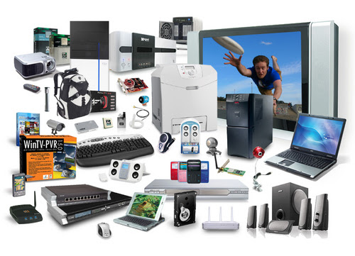

A second generation computer, it has transistorised circuitry. The Model 1's Internal processing speeds was 20 microseconds and it has core storage of up to 20,000 digits, extended by use of a IBM 1623 Core Storage (40,000 digits)
This was designed by Steve Wozniak and Steve Jobs. Apple was the first to have a "windows" type graphical interface and the computer mouse. Like modern computers, early Apples had a peripheral keyboard and mouse, and had a floppy drive that held 3.5" disks
The age of the networked computing, the Internet, the WWW, smart devices, and artificial intelligence.
Information Technology
Hardware
This refers to the external and internal devices and equipment that enable you to perform major functions such as input, output, storage, communication, processing, and more

Software
These are a set of instructions, data or programs used to operate computers and execute specific tasks. It is the opposite of hardware, which describes the physical aspects of a computer. Software is a generic term used to refer to applications, scripts and programs that run on a device.
Networking
This refers to interconnected computing devices that can exchange data and share resources with each other. These networked devices use a system of rules, called communications protocols, to transmit information over physical or wireless technologies.
Information technology (IT) has become a vital and integral part of every business plan. From multi-national corporations who maintain mainframe systems and databases to small businesses that own a single computer, IT plays a role. In today's digital age, information technology (IT) plays a vital role in the success and efficiency of modern organizations. IT has become an integral part of every aspect of business operations, from communication to data management and customer relationships.